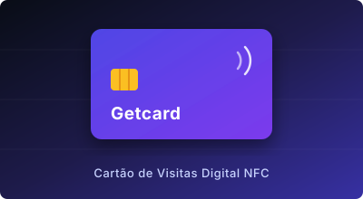
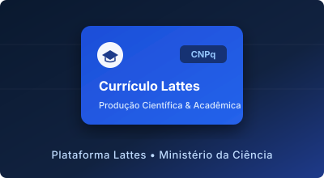

Getcard
Plataforma de cartões de visitas digitais e interativos com tecnologia de aproximação NFC.
Acessar projeto →Desenvolvedor Front-end no Programa Trilhas

Plataforma de cartões de visitas digitais e interativos com tecnologia de aproximação NFC.
Acessar projeto →Landing page oficial para apresentação comercial, entendimento do negócio e compra dos cartões inteligentes.
Acessar projeto →
Trajetória acadêmica, pesquisas, produções científicas e qualificações na plataforma CNPq.
Acessar projeto →Histórico profissional, experiências práticas, artigos e projetos em destaque no LinkedIn.
Acessar projeto →